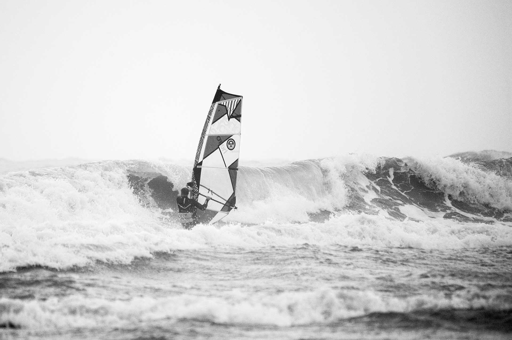

1990
flanders fun pool
BK wave was een onderdeel van de BABC Flanders funpool wedstrijd.
Weerberichten waren enkel zichtbaar op tv of teletekst, dus wedstrijden waren vaak een gok. De feestjes echter waren altijd gegarandeerd. Onder andere dankzij de hulp van Anthony Vroman, Xavier Huyssen, Marnix Mixnix, enz. was er altijd verse soep voorzien tijdens radicale en koude omstandigheden in de herfst.
